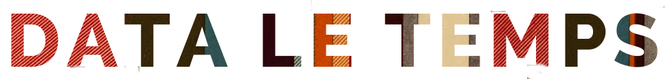

Page d'accueil | Nos projets sur Github | Notre veille sur Twitter
A propos
Bienvenue sur la page Github de l'équipe Data du quotidien suisse le Temps. Nos applications interactives sont écrites avec du texte et des images mais aussi avec du html, du css, du javascript, du python... Sans compter le recours à des litres de café et à des cachets d'aspirine pour le mal de tête. Notre code est développé pour nos propres projets ou nos propres outils, et souvent dans l'urgence. Mais si ce code peut vous aider, nous en sommes ravis et vous voulez y jeter un oeil ou piocher dedans.
Et si vous êtes curieux des nouveaux formats, vous pouvez suivre notre veille sur notre compte Twitter ou sur notre page Facebook.